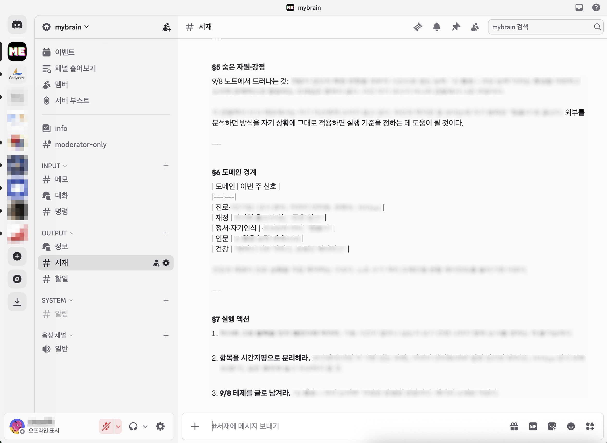
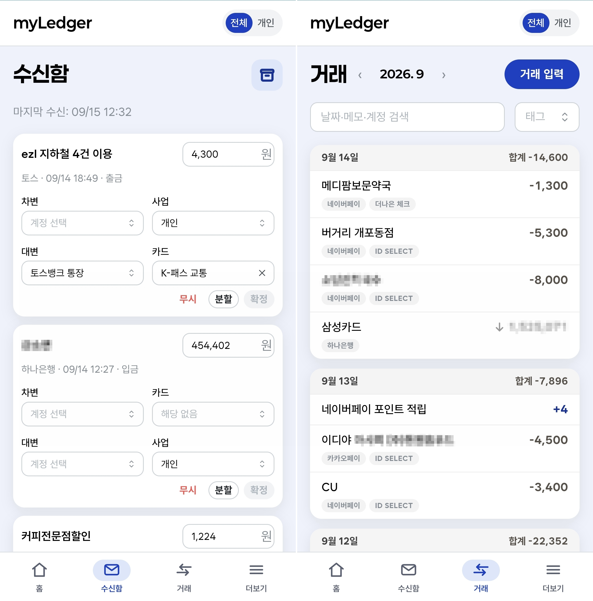

통계학을 전공했고, 원래 이런저런 도구 만져보는 걸 좋아했습니다. 필요한 게 생기면 찾아 쓰기보다는 직접 만들어보는 편이었는데, AI를 쓰기 시작하면서 그게 훨씬 쉬워졌습니다. 요즘은 바이브코딩으로 제가 필요했던 것들을 하나씩 만들어보고 있습니다.
최근에는 Discord에 생각이나 메모를 그냥 던져두면 알아서 모으고 정리해주는 ‘mybrain’을 만들었습니다. 나중에 다시 꺼내볼 만한 생각들을 놓치지 않으려고 만든 개인 세컨드 브레인입니다. 매주 메모를 요약해주고, 자주 나온 주제를 찾아주거나 할 일을 정리하고 글감도 추천해줍니다.

또 하나는 개인 가계부와 여러 사업자 장부를 한곳에서 관리하는 복식부기 가계부입니다. 카드나 계좌 알림을 읽어서 거래를 자동으로 등록하고, 개인 지출과 사업 지출을 나눠서 기록할 수 있게 만들고 있습니다. 나중에는 종합소득세 신고에 필요한 자료까지 직접 뽑을 수 있게 하는 게 목표입니다.
